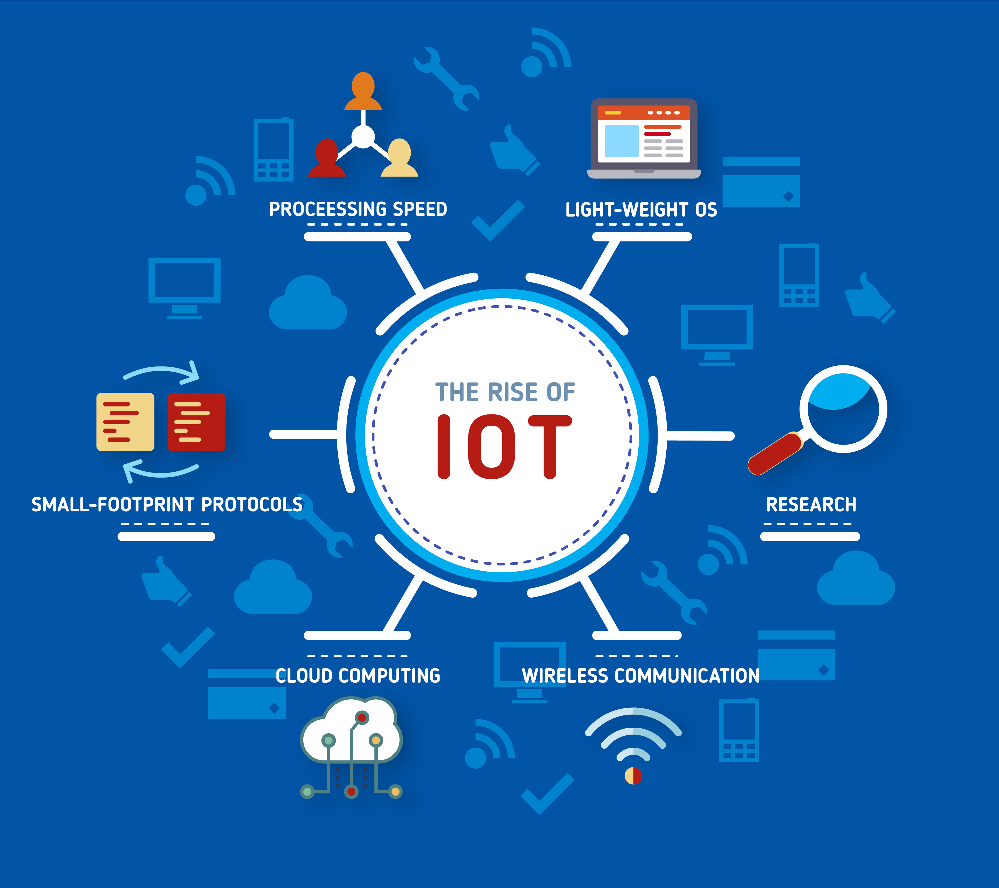

What is Internet of Things (IoT)?

The Internet of Things (IoT) refers to the network of physical objects, devices, vehicles, buildings, and other items embedded with sensors, software, and network connectivity
that enables them to collect and exchange data. These objects are often referred to as "smart" devices, as they are capable of sensing their environment, processing data, and communicating with other devices over the
internet.
The IoT is characterized by the ability to collect large amounts of data from a variety of sources, which can be analyzed and used to make more informed decisions. For example, IoT sensors
in a manufacturing plant can collect data on machine performance and send it to a central system for analysis, enabling operators to identify and address issues before they result in downtime or lost productivity.
The IoT is also changing the way that businesses and consumers interact with the physical world. For example, smart homes equipped with IoT devices can be controlled remotely using a smartphone
app, while connected cars can provide real-time information on traffic and road conditions.
The IoT is enabling a new level of automation, efficiency, and convenience in a wide range of industries and applications, from manufacturing and logistics to healthcare and consumer electronics.
Here are a few more examples of how the Internet of Things (IoT) is being used in various applications:
- Industrial Automation: IoT is being used in manufacturing and other industrial settings to optimize production processes, reduce downtime, and improve safety. IoT sensors can be used to monitor machine
performance and detect faults before they result in equipment failure, while predictive analytics can be used to optimize maintenance schedules and reduce downtime.
- Healthcare: IoT is being used in healthcare to improve patient outcomes, reduce costs, and increase efficiency. IoT sensors can be used to monitor patients' vital signs and other health metrics in real-time,
allowing for early detection and intervention of health problems. IoT-enabled devices can also be used to remotely monitor patients, reducing the need for hospitalization and in-person visits.
- Agriculture: IoT is being used in agriculture to improve crop yields, reduce waste, and increase efficiency. IoT sensors can be used to monitor soil moisture, temperature, and other environmental factors,
allowing farmers to optimize irrigation and fertilization schedules. IoT-enabled devices can also be used to monitor crop health and detect pests and diseases early, reducing the need for pesticides and other interventions.
- Smart Cities: IoT is being used in smart cities to improve public services, increase efficiency, and reduce costs. IoT sensors can be used to monitor traffic, air quality, and other environmental
factors, allowing for real-time adjustments to traffic flow and public transportation. IoT-enabled devices can also be used to optimize energy usage in public buildings and streetlights, reducing energy costs and
carbon emissions.
- Manufacturing: IoT is being used in manufacturing to improve efficiency and quality control. IoT sensors can be used to monitor production lines, identifying potential issues and allowing for real-time
adjustments to improve output and reduce waste. IoT-enabled devices can also be used to track products throughout the manufacturing process, ensuring that quality standards are met and reducing the risk of defects
or recalls.
- Retail: IoT is being used in retail to provide personalized shopping experiences and optimize supply chain management. IoT sensors can be used to track inventory levels in real-time, reducing the need
for manual stock checks and ensuring that products are always available for customers. IoT-enabled devices can also be used to personalize marketing messages and promotions based on individual customer preferences
and behavior.
- Transportation: IoT is being used in transportation to improve safety, efficiency, and sustainability. IoT sensors can be used to monitor traffic patterns, road conditions, and other factors, allowing for
real-time adjustments to traffic flow and reducing the risk of accidents. IoT-enabled devices can also be used to optimize vehicle maintenance and reduce fuel consumption, helping to reduce costs and carbon emissions.
These are just a few more examples of how IoT is being used to improve efficiency, productivity, and quality of life in various industries.
Device Management, IoT Protection, and Analytics are examples of services that are provided by Internet of Things (IoT) platforms.
Device Management services refer to the set of tools and services that enable developers to manage, monitor, and control IoT devices deployed in the field. This includes device registration and onboarding,
firmware updates, remote monitoring and control, and device configuration management.
IoT Protection services refer to the set of security and privacy features provided by IoT platforms to protect IoT devices and data from cyber threats and ensure compliance with data privacy regulations. This
includes device authentication, device provisioning, device security management, and data encryption.
Analytics services refer to the set of tools and services that enable developers to collect, store, analyze, and visualize data generated by IoT devices. This includes real-time analytics, predictive analytics,
and machine learning-based analytics.
IoT platforms typically provide a combination of these services to enable developers to build and deploy secure, scalable, and data-driven IoT solutions. Some examples of IoT platforms that provide these services include
AWS IoT, Microsoft Azure IoT, Google Cloud IoT, IBM Watson IoT, and Oracle IoT.
About
- If you want to learn more, you can search for it in your browser.
- The content of this site is not mine to take credit. I only get information on the internet.
- Click to Watch my Video